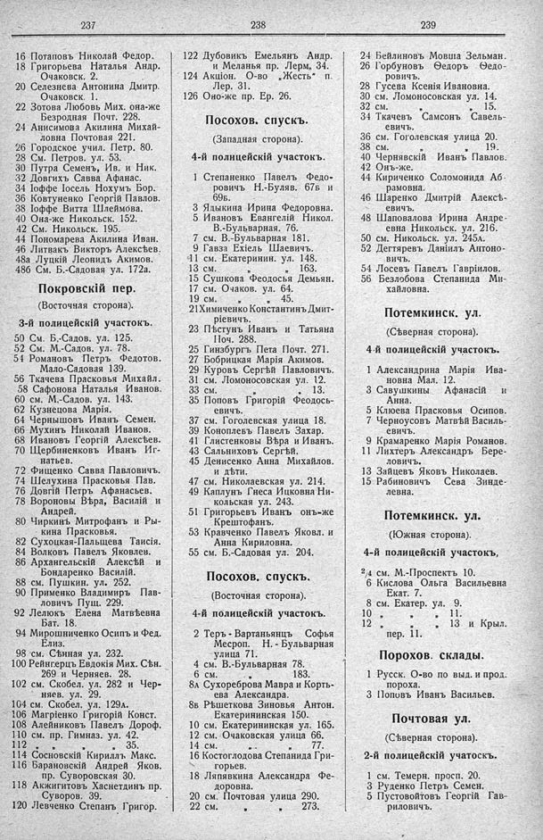

Лист источника 211
Скан

Распознанный текст
237
16 Потаповъ Николай Федор.
18 Григорьева Наталья Андр.
Очаковск. 2.
20 Селезнева Антонина Дмитр.
Очаковск. 1.
22 Зотова Любовь Мих. она-же
Безродная Почт. 228.
24 Анисимова Акилина Михай-
ловна Почтовая 221.
26 Городское учил. Петр. 80.
28 См. Петров. ул. 53.
30 Путра Семенъ, Ив. и Ник.
32 Довгихъ Савва Афанас.
34 Іоффе Іосель Нохумъ Бор.
36 Ковтуненко Георгій Павлов.
38 Іоффе Витта Шлеймова.
40 Она-же Никольск. 152.
42 См. Никольск. 195.
44 Пономарева Акилина Иван.
46 Литвакъ Викторъ Алексѣев.
48а Луцкій Леонидъ Акимов.
48б См. Б.-Садовая ул. 172а.
Покровскій пер.
(Восточная сторона).
3-й полицейскій участокъ.
50 См. Б.-Садов. ул. 125.
52 См. М.-Садов. ул. 78.
54 Романовъ Петръ Федотов.
Мало-Садовая 139.
56 Ткачева Прасковья Михайл.
58 Сафонова Наталья Иванов.
60 см. М.-Садов. ул. 143.
62 Кузнецова Марія.
64 Чернышовъ Иванъ Семен.
66 Мухинъ Николай Иванов.
68 Ивановъ Георгій Алексѣев.
70 Щербиненковъ Иванъ Иг-
натьев.
72 Фищенко Савва Павловичъ.
74 Шелухина Прасковья Пав.
76 Довгій Петръ Афанасьев.
78 Вороновы Вѣра, Василій и
Андрей.
80 Чиркинъ Митрофанъ и Ры-
кина Прасковья.
82 Сухоцкая-Пальцева Таисія.
84 Волковъ Павелъ Яковлев.
86 Архангельскій Алексѣй и
Бондаренко Василій.
88 см. Пушкин. ул. 252.
90 Применко Владимиръ Пав-
ловичъ Пуш. 229.
92 Лелюкъ Елена Матвѣевна
Бат. 18.
94 Мирошниченко Осипъ и Фед.
Елиз.
98 см. Сѣнная ул. 232.
100 Рейнгерцъ Евдокія Мих. Сѣн.
269 и Черняев. 28.
102 см. Скобел. ул. 282 и Чер-
няев. ул. 29.
104 см. Скобел. ул. 129а.
106 Магріенко Григорій Конст.
108 Алейниковъ Павелъ Дороф.
110 см. пр. Гимназ. ул. 42.
112 „ „ „ „ 35.
114 Сосновскій Кириллъ Макс.
116 Барановскій Андрей Яков.
пр. Суворовская 30.
118 Акжигитовъ Хаснетдинъ пр.
Суворов. 39.
120 Левченко Степанъ Григор.
238
122 Дубовикъ Емельянъ Андр.
и Меланья пр. Лерм. 34.
124 Акціон. О-во „Жесть“ п.
Лер. 31.
126 Оно-же пр. Ер. 26.
Посохов. спускъ.
(Западная сторона).
4-й полицейскій участокъ.
1 Степаненко Павелъ Федо-
ровичъ Н.-Буляв. 67б и
69б.
3 Ядыкина Ирина Федоровна.
5 Ивановъ Евангелій Никол.
В.-Бульварная. 76.
7 см. В.-Бульварная 181.
9 Гавза Ехіель Шаевичъ.
11 см. Екатеринин. ул. 148.
13 см. „ „ 163.
15 Сушкова Ѳеодосья Демьян.
17 см. Очаков. ул. 64.
19 см. „ „ 45.
21Химиченко Константинъ Дмит-
ріевичъ.
23 Пѣстунъ Иванъ и Татьяна
Поч. 288.
25 Гинзбургъ Пета Почт. 271.
27 Бобрицкая Марія Акимов.
29 Куровъ Сергѣй Павловичъ.
31 см. Ломоносовская ул. 12.
33 см. „ „ 13.
35 Поповъ Григорій Ѳеодось-
евичъ.
37 см. Гоголевская улица 18.
39 Коноплевъ Павелъ Захар.
41 Глистенковы Вѣра и Иванъ.
43 Сальниковъ Сергѣй.
45 Денисенко Анна Михайлов.
и дѣти.
47 см. Николаевская ул. 214.
49 Каплунъ Гнеса Ицковна Ни-
кольская ул. 243.
51 Григорьевъ Иванъ онъ-же
Крештофанъ.
53 Кравченко Павелъ Яковл. и
Анна Кириловна.
55 см. Б.-Садовая ул. 204.
Посохов. спускъ.
(Восточная сторона).
4-й полицейскій участокъ.
2 Теръ - Вартаньянцъ Софья
Месроп. Н. - Бульварная
улица 71.
4 см. В.-Бульварная 78.
6 см. „ 183.
8а Сухореброва Мавра и Корть-
ева Александра.
8в Рѣшеткова Зиновья Антон.
Екатерининская 150.
10 см. Екатерининская ул. 165.
12 см. Очаковская улица 66.
14 см. „ „ 77.
16 Костоглодова Степанида Гри-
горьев.
18 Ляпявкина Александра Фе-
доровна.
20 см. Почтовая улица 290.
22 см. „ „ 273.
239
24 Бейлиновъ Мовша Зельман.
26 Горбуновъ Ѳедоръ Ѳедо-
ровичъ.
28 Гусева Ксенія Ивановна.
30 см. Ломоносовская ул. 14.
32 см. „ „ 15.
34 Ткачевъ Самсонъ Савель-
евичъ.
36 см. Гоголевская улица 20.
38 см. „ „ 19.
40 Чернявскій Иванъ Павлов.
42 Онъ-же.
44 Кириченко Соломонида Аб-
рамовна.
46 Шаренко Дмитрій Алексѣ-
евичъ.
48 Шаповалова Ирина Андре-
евна Никольск. ул. 216.
50 см. Никольск. ул. 245а.
52 Дегтяревъ Даніилъ Антоно-
вичъ.
54 Лосевъ Павелъ Гавріилов.
56 Безлобова Степанида Ми-
хайловна.
Потемкинск. ул.
(Сѣверная сторона).
4-й полицейскій участокъ.
1 Александрина Марія Ива-
новна Мал. 12.
3 Савушкины Афанасій и
Анна.
5 Клюева Прасковья Осипов.
7 Черноусовъ Матвѣй Василь-
евичъ.
9 Крамаренко Марія Романов.
11 Лихтеръ Александръ Бере-
ловичъ.
13 Зайцевъ Яковъ Николаев.
15 Рабиновичъ Сева Зинде-
левна.
Потемкинск. ул.
(Южная сторона).
4-й полицейскій участокъ,
2/4 см. М.-Проспектъ 10.
6 Кислова Ольга Васильевна
Екат. 7.
8 см. Екатер. ул. 9.
10 „ „ „ 11.
12 „ „ „ 13 и Крыл.
пер. 11.
Порохов. склады.
1 Русск. О-во по выд. и прод.
пороха.
3 Поповъ Иванъ Васильев.
Почтовая ул.
(Сѣверная сторона).
2-й полицейскій участокъ.
1 см. Темерн. просп. 20.
3 Руденко Петръ Семен.
5 Пустовойтовъ Георгій Гав-
риловичъ.